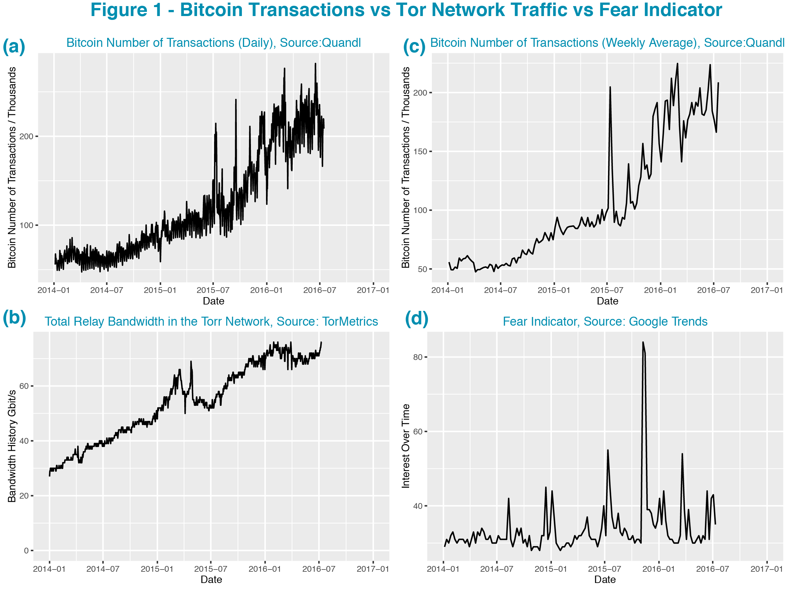
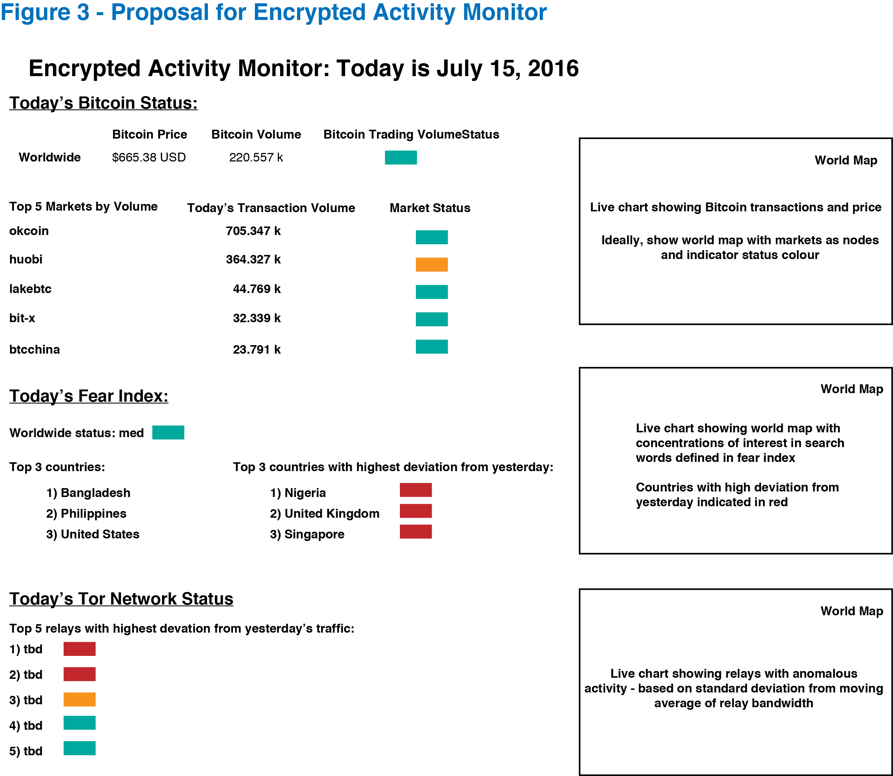

Project Overview
Data Sources
Preliminary Results - Correlating Bitcoin Transactions with Tor Network Traffic and Fear Index
Preliminary Results - Geographical Analysis
Proposed Project Implementation
The volume of Bitcoin transactions and traffic on the Tor network have both greatly increased since 2014 and there is an increasing interest in crypto-currencies in the financial industry. Additionally, there is increasing political instability worldwide which may relate to this growth.
I propose to develop a framework for an encrypted activity monitoring system, highlighting abnormal local and global fluctuations in:
(1) Bitcoin transaction volume
(2) Tor relay traffic
(3) World events (related to terror attacks in preliminary analysis)
I will analyze the data for evidence of a causal relationship and work towards the goal of developing a predictive algorithm for the fluctuations of these parameters. For example, is there a pattern in Tor relay traffic and bitcoin transaction volume? How do local fluctuations in the Tor network relate to world events and is there a causal relationship in the Bitcoin transaction volume?
In the first instance, the activity monitoring tool may alert a Bitcoin owner or trader to abnormal trading activity so that they may take action accordingly, high volume trading likely being linked to the Bitcoin price. In the second instance, high fluctuations of activity may perhaps serve as an alert system to acts of terror or may occur from a knock-on effect.
Tor network: The Tor network facilitates open network access free from surveillance with the mission to enable freedom, privacy, and confidential activities. Tor can be used by anyone and is particularly useful for confidential businesses, researchers searching for sensitive information, and military and law enforcement agencies. To enable financial transactions on the Tor network crypto currencies can be used, such as Bitcoin.
Bitcoins: Bitcoins are a widely used crypto-currency. They can be bought and sold on several world-wide exchanges, including the largest two exchanges bit-x and okcoin.
The data sources are all available by API calls, implemented in R for preliminary analysis. Note that the weblinks below are not active while the project is under construction.
Bitcoins: The Bitcoin transaction volumes are available in json and csv format from: https://www.quandl.com/collections/markets/bitcoin-data.
Daily and historical data is accessible from this website for specific markets as well as the total global transactions. Historical data sets (of price, volume, etc.) are approximately 50kB each, with the data for 16 markets being available.
Tor network flow: Tor Metrics provides statistics on network relays and bridge (hidden relays), number of users accessing
the network, and many other metrics. It should be possible to construct statistical information analyzing the number of users connecting from a country each day as well as bandwidth consumption. Note that the metrics still protect the anonymous nature of the network and this project does not aim to compromise the ideals of the network.
The total Tor traffic is available in csv format(700kB) from: https://metrics.torproject.org/bandwidth-data.html
The estimated number of clients in the Tor network in csv format (25MB) available here: https://metrics.torproject.org/userstats-combined-data.html
(And Graphs of the direct users by country are available here: https://metrics.torproject.org/userstats-relay-country.html)
The Tor network flow has been previously modelled: https://torflow.uncharted.software/
And the code for the model and example data files are located at github, perhaps useful as a guide for the construction of data files for this project: https://github.com/unchartedsoftware/torflow .
Sentiment analysis: Google trends data is easily available in csv format from google.com/trends.
Additional data sources will be considered to measure fluctuations in world events. Preliminary analysis has used search words related to terror attacks and thought to represent finite localized events.
Preliminary analysis shows there is a high degree of correlation between Bitcoin trading and Tor network traffic. Using R to calculate the correlation of the daily activity since 2014 shows a correlation of 0.867 with a 95% confidence interval of 0.85 to 0.88 and p value of 2.2e-16.
A preliminary sentiment relationship was examined by using a simple fear index created from Google Trends analysis of keywords "terrist", "suicide", "terrorist+attack", "bomb", "isis". The data was easily available on a weekly basis and therefore the Bitcoin data was analyzed on the same time interval (the weekly data was also available from Quandle in csv) A correlation of 0.273 with a 95% confidence interval of 0.11 to 0.42 and p-value of 0.0016 shows that there is a weakly positive relationship.
Figures available online show geographical concentrations for bitcoin nodes and tor network relay traffic. Visual analysis shows compelling evidence for the presence of geographical correlations between the two parameters. For example, there is a high concentration of Tor traffic through a node in West Africa and there is also a Bitcoin node in the same region.
The geographical information of the Bitcoin transactions may perhaps be approximated to the volume trading in specific markets, the data for these markets being easily available from Quandl. Finally, further preliminary analysis shows that there is a concentration of level of interest in Google Trends data, with the keyword "Bitcoin". The high concentration seen for Bitcoin interest is from Ghana.
In the project, I propose to create an encrypted activity monitoring system that shows (1) Bitcoin status (2) Fear Index - Sentiment Monitor (3) Tor Network Status. See Figure 3 below which shows a proposed model for the webpage. The status color green, yellow, red, will be a measure of fluctuations and change relative to the moving average or standard deviation of historical activity. Additionally, world map plots will show the geographical location of high levels of fluctuations outside of standard deviations of normal activity. Ideally, several consecutive days will be shown so that the user may visualize and analyze geographical relationships of unexpected fluctuations.
Analyze the moving average compared to daily fluctuations in the transaction volumes in local markets. ie., train an algorithm on historical data. Confirm if a simple threshold will allow the selection of local anomalous activity. Construct a worldmap and locate the markets on the map.
Learn more about the Tor network and construct a method for obtaining daily traffic information from the top relays from the csv files available from Tor Metrics. Calculate the moving average and standard deviation of the historical data set. Confirm if a simple threshold will allow the selection of local anomalous activity. ie., train an algorithm on historical data. Additionally, construct a worldmap and locate the subset of nodes on the map.
Google trends data limits the historical resolution of level of interest to weeks, instead of days, for time periods greater than 3 months. A daily historical data set needs to be built from iterative calls to google trends to construct the data set of daily data. Alternatively, a different source will be considered, such as the New York Times or Twitter.
Evaluation and implementation of a predictive algorithms. For example, it may be possible to use machine learning to predict behaviour of the Fear Index (sentiment) based on local anomolies of Tor Network Traffic and/or Bitcoin trading volumes.